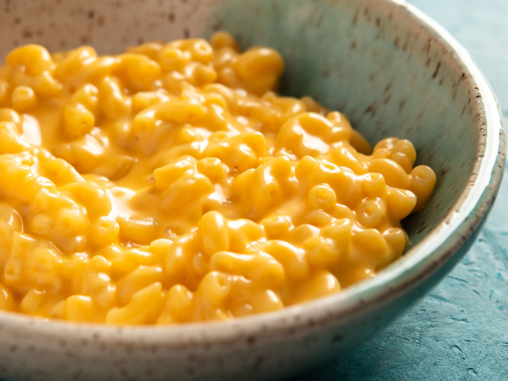

MacNCheese

Description
A classic, the ultimate quick and easy go to meal.
If done correctly you are rewarded with a gooey cheesy bowl of joy.
Ingredients
- elbow noodles
- cheese(a lot)
- milk
Steps
- Place a pot water on the stove to boil
- When water comes to a boil dump your noodles in
- While noodles are cooking, place cheese and milk into another pot to melt down
- When noodles are cooked to a point where they look a little fluffy, remove from heat and strain.
- Pour melted cheese milk mixture over the stainged noodles and mix well.
- Allow cheese to thicken on noodles, optionally you can grate additional cheese ontop.